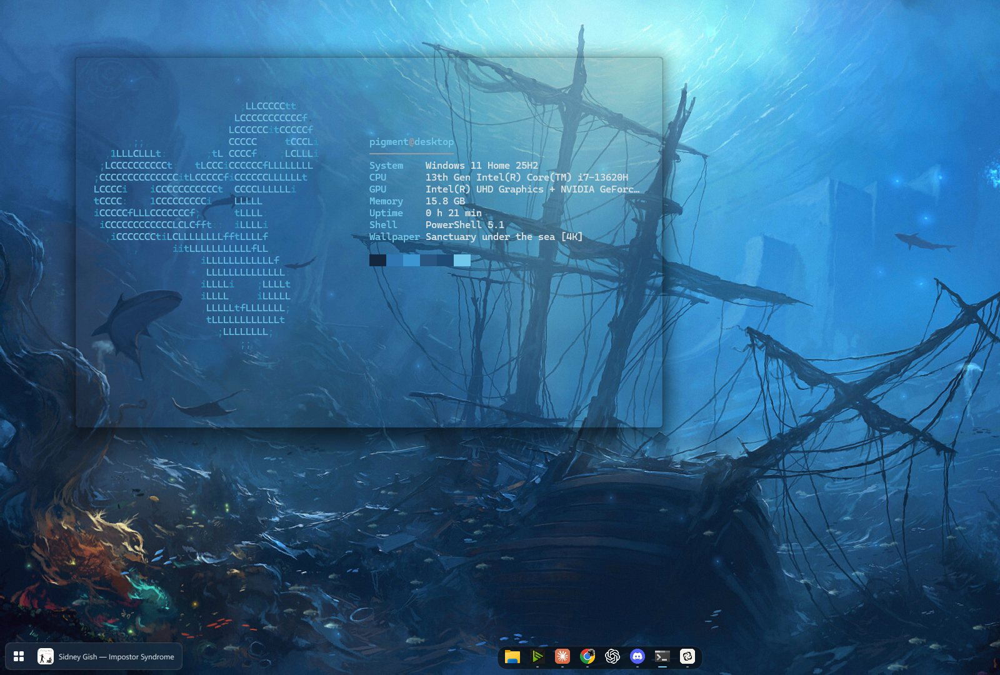

Change the wallpaper
Use Windows, Wallpaper Engine or Pigment’s own picker on CtrlAltW.
~ pigment --follow wallpaper
Pigment reads whatever is on your desktop — a static image or a live Wallpaper Engine scene — and recolors the dock, terminal, clock and Windows accents to match.
Windows 11 · x64 · English & Russian
Use Windows, Wallpaper Engine or Pigment’s own picker on CtrlAltW.
It takes a palette from the wallpaper itself. For live scenes it checks what is actually on screen, so day and night cycles count too.
Dock, Windows Terminal, clock, accent color and the rotating logo pick up the new palette.

Real captures from one PC. Only the wallpaper changes between shots; the page takes its accent from the same palette.
// windows terminal
Keep using ordinary Windows Terminal. Pigment gives it wallpaper colors, blur and a rotating ASCII mark — plus a few toys.
neofetchcmatrixcavavismusicSame terminal, five wallpapers. The user and host name are replaced for privacy; everything else is as captured.
// and the rest
Apps, windows, settings and files on one side, the web on the other, a calculator on top.
CtrlAltSpace
Player, synced lyrics and visualizers. Type music and terminals arrange themselves around the player.
An endless canvas of live windows. Zoom, pan, drag them around, or lift one and work in it right there. The layout is remembered.
WinTab
Pinned and running apps with a magnifying wave, its own Start menu and search.
Win
Clock, calendar and glass panels per monitor. Hidden automatically when the wallpaper has its own clock.
One button checks the release, verifies the download and restarts. Uninstall restores your previous look.
// get it
Pigment is free and in beta. Try the parts you like and tell us what needs work.
0.1.7 beta · Windows 11 x64The installer is unsigned, so Windows may show a security warning. Portable runs from any folder.
// before you install
No. Pigment works with ordinary Windows wallpapers and has a small built-in library. With Wallpaper Engine installed it also follows live wallpapers. The wallpapers on this page are Workshop items and do not come with Pigment.
Exact word timestamps are used when available. For ordinary LRC with line timestamps, word reveal is approximate. You can change the reveal mode and set a timing offset for each track.
Open Updates inside Pigment to check for a release and update with one button. Nothing is downloaded or installed until you press Update.
The uninstaller offers to restore the appearance settings Pigment backed up and keeps your Pigment settings. Installer notes.
Report a bug or suggest a feature — include your Windows version, monitor setup and the steps that led to the issue.